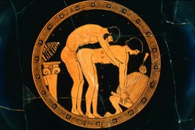

«"Мекаю" слава в веках, вен из лавра и тр...»
Г. Омер-Ронен-Апфельзафт со стадиона "Петровский"
Поле футбольное, флаги над полем тем пёстро мерцают, Бьет барабан и алтарь приготовлен уж к дарственной жертве. Сотни быков и овец, и рабынь белоруких без счета Жадный огонь поглотит и не только во славу футбола. Много гостей на трибунах сегодня в ондатровых шапках, Тихо сидят на заду и рукою яйцо поправляют. Вот Михаил грузнозадый, владалец старинного замка, Сын Самуэля и Зевса, богами за пиво проклятый. Вот Расторгуев сидит, чернозёма певец и берёзок, Фредди и Джейсон, Махно, император Земли Кириобий, Гайбраш Трипвуд, Ларри Лафер и Роджер, блять, Вилко. Даже пан Клякса пришёл из старинного детского фильма. Битва сегодня пойдет не на жизнь, а на поле, Что засевал и холил седовласый голландец из фирмы. Кто победит? Неужели мощнявый "Мекай", Чичимоня взрастивший? Или, быть может, "Да Бойз", как бы мать и отец Гайдарбеки? Хуй его знает, друзья ахеяне, троянцы и ливы, Это футбол, а в футболе любое возможно. Так говорил капитан аргонавтов Язон, а ему грех не верить После того, как он срезал руно у царя из Колхиды. Обе команды на поле выходят в рифлёных доспехах. Зрители видят, что будет "сухарь" - игроков обороны Ровно по пять в основании каждого клуба, Что уповают на резвость своих контратак быстроногих. Вот на десятой минуте последовал пас из направа И Чичимоню свернул набекрень его бронзовый кумпол, Тут ему стало херово, прохладно и не до футбола, Хоть он и вышел один на один на вратарь на ворота. Майкут Камил оборону чужую убрал на замахе обманном И, будто нож сквозь защиту, прошёл через масло. Вынырнул жирный и жёлтый, как репа, луна и липиды, И запустил мимо мяч по вратам, на которых стоял Ребоусас. Он же парировал злобный удар, что нанес Вагенбауэр коварный, Сын Еврипида, Эдипа, Исака, Иссы и "Не ссы", - заявил ему рефер. Мекаев Лау ответил лажовой атакой по центру, Будет гореть он в огне, хоть у греков и не было ада. Но, испугавшись такой перспективы безмерно унылой, Лау на помощь призвал сквернословья богиню Костиду. И, воскурив фимиам и оливою пику намазав, Крикнул он: "Жопа!" и метко пробил по воротам. Был еще шанец отмазаться весело у кукурузных, Если бы Элран Тадмор тренировки не путал с собакой. Зрители встали, звучит рефери свистогласый, Поле пустеет, и птицы на юг улетают. "Мекаю" слава в веках, вен из лавра и трон на Олимпе, Чтобы хуярить нектар из стаканов с другими богами, Блюда с амброзией, девы, лаве и беспечное лето. Ну а "Да Бойз" отправляется в мрачное царство Аида.
